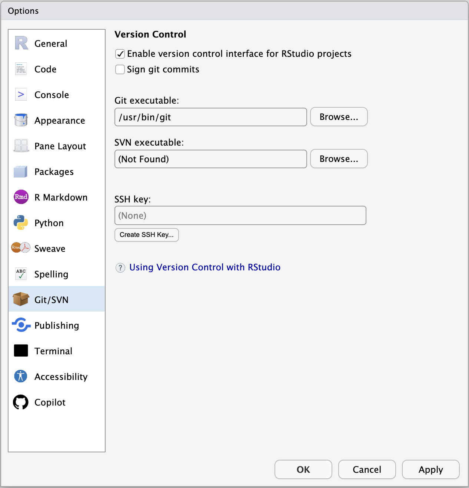
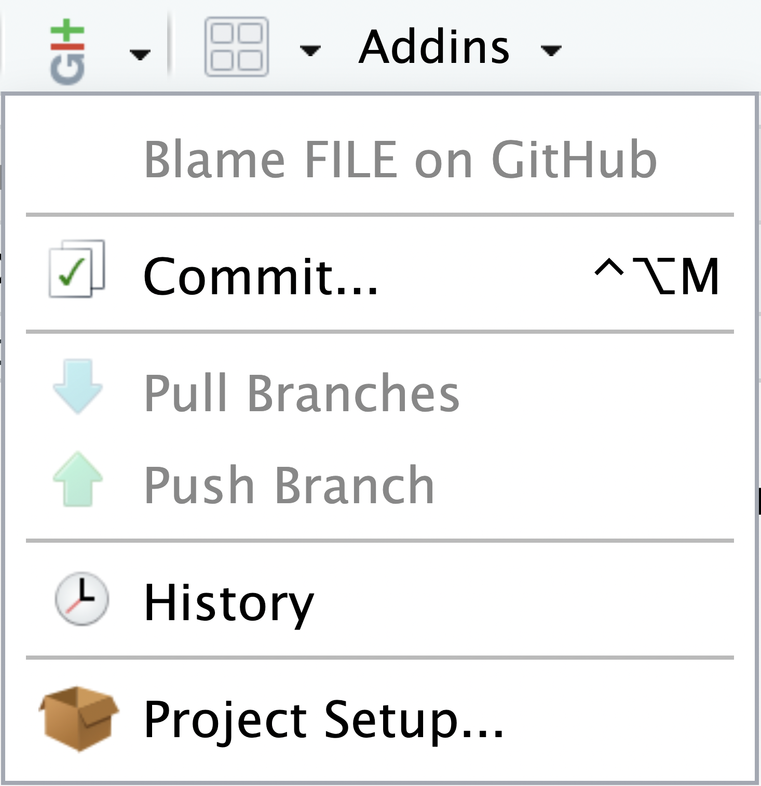
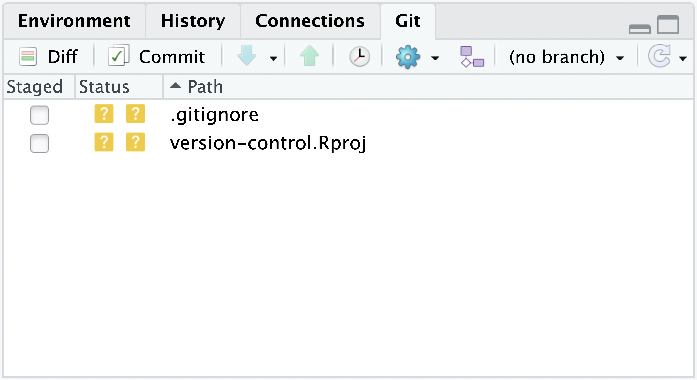
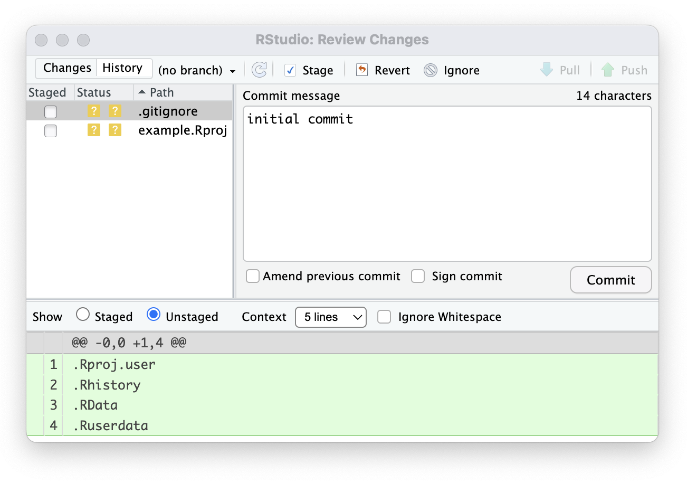
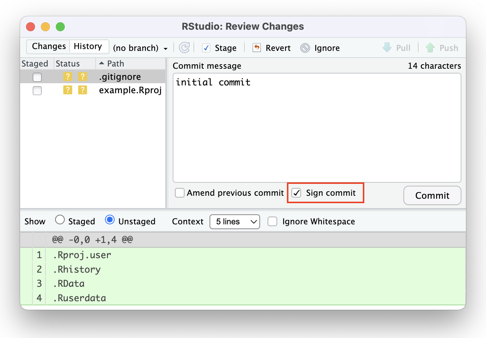

Version Control
Version control helps software teams manage changes to source code over time. Version control software keeps track of every modification to the code in a special kind of database. If a mistake is made, developers can turn back the clock and compare earlier versions of the code to help fix the mistake while minimizing disruption to all team members. Version control systems have been around for a long time but continue to increase in popularity with data science workflows.
RStudio has integrated support for version control. If you are new to version control, see a deeper overview in: Happy Git and Github for the useR
Requirements
RStudio supports the following open source version control systems:
To use version control with RStudio, first ensure that Git and/or Subversion tools are installed on your workstation (details below).
Version control is most useful when used with a remote repository. Remote repositories are typically managed by your company or are hosted in the cloud (e.g., Github or GitLab). Make sure you have credentials to access these systems. If you only want to learn how to use version control, you can manage a standalone system on your workstation but you will not be able to share code with others.
You should also become familiar with using RStudio Projects (which are required for version control features to be enabled).
Installation
Prior to using RStudio’s version control features you will need to ensure that you have Git and/or Subversion installed on your system. The following describes how to do this for various platforms.
Git
Prior to using Git with RStudio you should install it using the appropriate method for your platform as indicated at https://git-scm.com/download/.
An excellent resource for learning more about Git and how to use it is the Pro Git online book. Another good resource for learning about git is the Git Bootcamp provided by GitHub.
Subversion
Prior to using Subversion with RStudio you should install it using the appropriate method for your platform as indicated at https://subversion.apache.org/packages.html.
An excellent resource for learning more about Subversion and how to use it is the Red Bean online book.
Getting Started
Once a Version Control system has been installed, it needs to be activated on the system by following these steps:
From the Tools menu, click Global Options
Click on the Git/SVN tab
Click Enable version control interface for RStudio projects
If necessary, enter the path for the Git or SVN executable where provided. A SSH key can be created or added for SSH if necessary.

If you are using RStudio Server, by default RStudio Server will look at the PATH for the first Git executable it finds, and sets that as the default. If you have a specific version that you want to set for all users, the easiest option is to make sure it’s the first available on the PATH system-wide.
Alternately, in Posit Workbench (previously RStudio Server Pro/RStudio Workbench), you can set the default Git version system-wide by setting the git_exe_path option in your system rstudio-prefs.json file. See here for more:
https://docs.posit.co/ide/server-pro/r-sessions.html#customizing-session-settings
https://docs.posit.co/ide/server-pro/session-user-settings.html
RStudio’s version control features are tied to the use of Projects (which are a way of dividing work into multiple contexts, each with their own working directory). The steps required to use version control with a project vary depending on whether the project is new or existing as well as whether it is already under version control.
Integrations
Once version control such as Git has been enabled for the current RStudio Project, a few visual elements are added, specifically the Git/Version control dropdown and the Git/Version Control tab.
If you’ve installed Git for version control but the Git pane doesn’t display, you may need to perform the steps outlined in the section Git is installed, but the Git pane doesn’t appear.

The Git menu dropdown provides Commit, Pull/Push Branch, History and Project Setup.

The Git tab within the Environment pane provides a number of useful commands such as “Diff”, “Commit”, the Push/Pull arrows, View history ‘clock’, or selecting a specific branch.

Once you are finished with your local work and are ready to Commit your changes, selecting Commit in either the Git drop-down menu or Git tab opens the Review Changes pop-up to select files for staging, add a commit message, and eventually push the commit.

Using version control
There are several options for using version control, depending on whether you are starting a new project or working on an existing project.
Using a directory already under version control
If you have an existing directory which is already under Git or Subversion version control then you can create a new RStudio project for that directory and then version control features will be automatically enabled. To do this:
Execute the New Project command (from the Project menu)
Choose to create a new project from an Existing Directory
Select the appropriate directory and then click Create Project
A new project will be created for the directory and RStudio’s version control features will then be available for that directory.
Creating a new project based on a remote Git or Subversion repository
If you have an existing remote Git or Subversion repository that you want to use as the basis for an RStudio project you should:
Execute the New Project command (from the Project menu)
Choose to create a new project from Version Control
Choose Git or Subversion as appropriate
Provide the repository URL (and other appropriate options) and then click Create Project
The remote repository will be cloned into the specified directory and RStudio’s version control features will then be available for that directory.
Adding version control to an existing project
Directions for remote repositories
Subversion directories are always paired with an external repository, so cannot be configured for version control without also configuring the external connection. In addition, we recommend that Git repositories always be configured with a remote repository in order to protect your data and maintain a separate backup.
If you have an existing directory that you want to add version control to, you should consult the documentation for Git or Subversion concerning how to initialize a repository (both local commands as well as commands required to connect it to a remote server). See the resources linked above for more on connecting your project to a remote repository.
Once you’ve configured your project with your repository, RStudio will detect that the project has been added and RStudio’s version control features will then be available for that directory.
Directions for Git (local)
Git repositories can be created in purely local mode (if for example you want to track changes locally but aren’t concerned with collaborating and/or syncing between multiple workstations). To add a git repository to an existing project:
Execute the Project Options command (from the Project menu)
Choose Version Control options
Change the version control system from (None) to Git
Confirm that you wish to initialize a new Git repository
A Git repository will be created for the project and you’ll be prompted to restart RStudio to enable version control features for the project.
Additional Topics
Using the Shell
RStudio provides an interface to the most common version control operations including managing changelists, diffing files, committing, and viewing history. While these features cover basic everyday use of Git and Subversion, you may also occasionally need to use the system shell to access all of their underlying functionality.
RStudio includes functionality to make it more straightforward to use the shell with projects under version control. This includes:
On all platforms, you can use the Terminal to open a new system shell with the working directory already initialized to your project’s root directory.
On Windows when using Git, the Shell command will open Git Bash, which is a port of the bash shell to Windows specially configured for use with Git for Windows (note you can disable this behavior and use the standard Windows command prompt instead using Options -> Version Control).
On Windows when using Subversion, RStudio opens a shell with a PATH configured to use a version of ssh.exe which ships with RStudio (required for svn+ssh connections, see below).
When running over the web, RStudio provides a web-based shell dialog.
SSH
Version control repositories can typically be accessed using a variety of protocols (including http and https). Many repositories can also be accessed using SSH (this is the mode of connection for many hosting services including GitHub and R-Forge).
In many cases the authentication for an SSH connection is done using public/private SSH key pairs. This type of authentication requires two steps:
Generate a public/private key pair
Provide the public key to the hosting provider (e.g. GitHub or R-Forge)
To make working with SSH key pairs more straightforward the RStudio Version Control options panel can be used to both create new SSH public/private key pairs as well as view and copy the current SSH public key.
While Linux and Mac OSX both include SSH as part of the base system, Windows does not. As a result the standard Windows distribution of Git (Git for Windows, referenced above) also includes an SSH client.
Subversion for Windows however does not include an SSH client. To overcome this limitation, RStudio includes a version of the Msys SSH client within the RStudio\bin\msys_ssh directory. This directory is automatically added to the PATH (for RStudio only rather than system-wide) and is also available on the PATH for command prompt windows opened using the Tools > Shell command. A Windows shortcut (SSH Command Prompt) is also provided within the RStudio\bin\msys_ssh directory to launch a console from the Desktop that supports the svn+ssh protocol.
Git Commit Signing
Git commit signing is a process used to verify the authenticity and integrity of commits within a Git repository. The Review Changes pop-up in RStudio includes a Sign commit check box. When it is selected, git will attempt to sign the commit.
If commit signing is globally enabled via git config --global commit.gpgsign true it is not necessary to select the check box.
You are responsible for configuring git commit signing and ensuring the associated key is unlocked. Otherwise, you will receive an error if you attempt to sign a commit via the Review Changes pop-up. Please consult the git documentation for details on how to configure commit signing for your platform.

Troubleshooting
Git is installed, but the Git pane doesn’t appear
The Git pane may not display if you’re working in a folder that your user does not have ownership of, such as a shared project. This is due to a security feature in git 2.35.2 that disables git repos created in directories the user does not own. You can verify that this is blocking the Git pane from displaying by submitting a git command in the terminal:
$ git status
fatal: detected dubious ownership in repository at '/home/posit-user/my-project-folder'
To add an exception for this directory, call:
git config --global --add safe.directory /home/posit-user/my-project-folderYou can mark the offending directory as safe by following the suggested action above and then closing and re-opening the project in RStudio.
RStudio User Guide RStudio User Guide
?var:buildType ?var:version GitHub Copilot Jobs in action Introduction Getting Started Guide Accessibility Simplified Interface Screen Reader User Interface Pane Layout Managing Files Themes Command Palette Code R Console RStudio Projects Executing code Code Diagnostics Debugging Code Sections Navigating Code Data Data Viewer Local Data Connections Pane Connection Snippets Connections Contract Tools Terminal RStudio Jobs Jobs in action Version Control GitHub Copilot Productivity Text Editor RStudio Addins Code Snippets Custom Shortcuts Project Templates Custom Settings Computational Documents Visual Editor Quarto Integration Deploy Connecting Publishing Package Development Environments R Startup R Package Repositories renv Python Reference Keyboard Shortcuts Versions https://docs.posit.co/previous-versions/rstudio/ Guides Workbench Admin Guide https://docs.posit.co/ide/server-pro/ Posit Workbench User Guide https://docs.posit.co/ide/server-pro/user/ Workbench Licenses https://docs.posit.co/ide/licenses/ Release Notes https://docs.posit.co/ide/news/ docs.posit.co https://docs.posit.co Posit Support https://support.posit.co/hc/en-us/ Guide Tools Version Control
Copyright © 2009-2024 Posit Software, PBC. All Rights Reserved.
RStudio ?var:buildType ?var:version


RStudio User Guide - Version Control RStudio User Guide - Version Control RStudio User Guide - Version Control RStudio User Guide